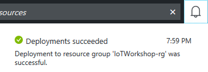
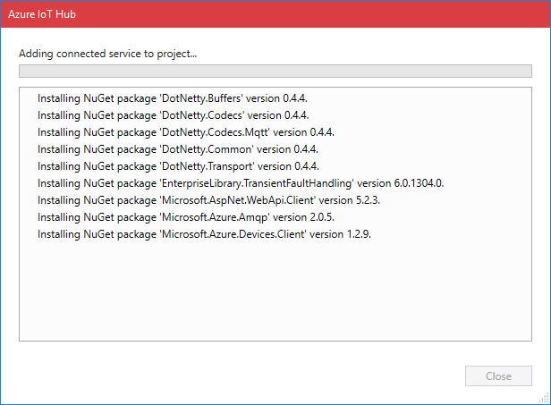

This is an example integration between a UWP app and Azure IoT Hub. This integration shows features like creating devices in the Azure IoT Hub device registry as well as sending telemetry to the IoT Hub.
Note: In this workshop, we will create uniquely named Azure resources. The suggested names could be reserved already. Just try another unique name.
Note: The IoT Hub also offers the ability to send commands back to devices. This is not part of this workshop.
A Windows 10 computer with internet access
Activate Developer mode on your Windows 10 account
Visual Studio 2017 Community edition
Visual Studio 2017 with UWP app support (Note: check the About page of Visual Studio for ‘Visual Studio Tools for Universal Windows Apps 15.0.26730.08’)
Visual Studio 2017 extension Connected Service for Azure IoT Hub
Application for checking out the Azure IoT Platform Device Explorer (for GUI based usage; see below for installation steps)
Azure account create here (Azure passes will be present for those who have no Azure account (please check your email for final confirmation))
At the end of this part of the workshop, the following steps are performed
Creating an IoT Hub in the Azure Portal
Creating a new UWP App
Connect to the IoT Hub and register the app like a device
Generate and send dummy telemetry
Monitoring the arrival of the telemetry in Azure
Conclusion
Follow these steps to create an Azure IoT Hub.
Log into the Azure portal. You will be asked to provide Azure credentials if needed
On the left, a number of common Azure services are shown. Select All Services to open a list with all available services

Filter it with IoT Hub

Select IoT Hub and a new blade will be shown. Select Add and you will be asked to enter the information needed to create an IoT Hub

Enter a unique IoT Hub name eg. IoTWorkshop-ih. A green sign will be shown if the name is unique
Enter a unique Resource Group eg. IoTWorkshop-rg. A green sign will be shown if the name is unique
Select West Europe for the location, if needed

Press Create and the portal will start creating the service. Once it is created, a notification is shown. In the right upper corner, a bell represents the list of all notifications shown

Creating an IoT Hub takes some time. Meanwhile, we will start with the app which will connect to the IoT Hub later on.

We will create a UWP app in Visual Studio. These apps are called Universal Windows Apps because they are supported by all sorts of devices running Windows 10. This includes laptops, PC’s, Mobile devices like phones and tablets, the Xbox One, The Surface Hub, The Hololens and even the Raspberry Pi.
*Note: Our app will simulate a machine which handles batches of work. It passes the increasing number of finished duty cycles every X seconds to the cloud. And we can simulate outage later on*On the Start Page or using the Menu, select New Project…

In the dialog, select the Blank App (Universal Windows) template

Select Ok. If you are asked which minimal platform version must be loaded, just press Ok again

Note: here the Windows 10 Anniversary edition is shown in the picture, please try select to select the most recent SDK
Press F6 or use the menu BUILD|Build Solution to recompile the app and check if the build completes without errors

F5 or use the menu DEBUG|Start DebuggingThe app starts and an empty form is shown
The app is created. You are now ready to add a connection to the IoT Hub.
Let’s add a connection to IoT hub and register the app like a real device.
ALT-F4 or the menu DEBUG|Stop debuggingGo to the solution Explorer to the right. You can see the application has one page called MainPage.xaml

In the solution, right-click Connected Services and select Add Connected Service

A welcome screen for the extension will be shown. Select Azure IoT Hub to add it as a Connected Service (Note: if this option is not shown, please double-check if the extension is installed)

You are required to connect to you Azure subscription. And the way device credentials are stored, must be chosen:

Select Hardcode shared access key as Security Mode. Confirm with OK
Now you will be asked to select the IoT Hub you want to connect. At this time, the Hub should be created. If you have multiple Azure accounts, please double-check that the correct one is selected

Select your IoT Hub and press Add
The next page of the wizard is shown. You are asked to select or add the registration of a device. Our app will represent a device and therefore access must be granted, which has to be created. Select New Device

Enter a unique device name eg ‘MachineCyclesUwp’ and press Create
The device is registered, it’s not needed to create more devices. Unique credentials are created for each device in the IoTHub
So afterward, in the ‘select’ tab, be sure to pick the ‘MachineCyclesUwp’; this one will be used by our app. (Note: in this workshop we will look at sending and receiving messages. This wizard can generate example code for device twins and direct methods also, but this is not part of the workshop)
Select Next to review the summary

Press Finish to start the generation of code. The necessary NuGet libraries are added and eventually you will be directed to a Get Started page for more information

The wizard now completed the creation of your example code

In the Solution Explorer of Visual Studio, a new file named ‘AzureIoTHub.cs’ is added. This provides all logic for the connection to the IoT Hub

The AzureIoTHub class can be integrated into the logic of our App. Let’s do that.

We will use the logic of the class later on when we integrate with our ‘factory machine’. But first let’s check out the ‘AzureIoTHub.cs’ file because it needs some rework.
Open the file named ‘AzureIoTHub.cs’
The file contains a class named ‘AzureIoTHub’ which has (al least) two methods: ‘SendDeviceToCloudMessageAsync’ and ‘ReceiveCloudToDeviceMessageAsync’. Note: receiving Cloud to Device messages will be discussed later on. More methods could be generated depending on the selection in the wizard
We alter the method called ‘Createclient’ which is private and provides a singleton access to the IoTHub Device client
The only thing changed by this code is that we now access the IoT Hub in the cloud using the AMQP protocol instead of MQTT. MQTT is more popular than AMQP because it is lightweight but also a bit more error prone. To guarantee a more stable communication during the workshop, AMQP is preferred
The method to send data is not that intelligent, it only sends a fixed message. Add the following code just below it
public static async Task SendDeviceToCloudMessageAsync(Telemetry telemetry)
{
CreateClient();
var message = new Message(Encoding.ASCII.GetBytes(Newtonsoft.Json.JsonConvert.SerializeObject(telemetry)));
try
{
await deviceClient.SendEventAsync(message);
}
catch (Exception)
{
deviceClient = null;
throw;
}
}
public class Telemetry
{
public int errorCode { get; set; }
public int numberOfCycles { get; set; }
}Note: The exception handling is very simplistic but effective. If an error occurs, the client is reset.
We have defined the Telemetry class which will hold the number of cycles executed. And the current error code of the device can be passed to the cloud. The telemetry is converted to JSON and passed to the Singleton instance of our device (Note: the credentials of the device is hardcoded)
Open the ‘XAML’ file named ‘MainPage.xaml’. The empty page will be shown both in a visual editor and a textual XAML editor
The page contains one component, a grid. But that grid is merely a container for other visual components
In the XAML editor, within the grid, add
<StackPanel>
<TextBlock Name="txbTitle" Text="Machine Cycles Demo" Margin="5" FontSize="100" IsColorFontEnabled="True" Foreground="DarkOliveGreen" />
<Button Name="BtnSend" Content="Send cycle updates" Margin="5" FontSize="60" Click="btnSend_Click" />
<Button Name="BtnBreak" Content="Break down" Margin="5" FontSize="60" Click="BtnBreak_OnClick" />
<TextBlock Name="TbMessage" Text="---" FontSize="60" />
</StackPanel>Three buttons and two text blocks are put on the screen. Go to the code-behind source code which will be executed when the buttons are clicked
Press F7, the file ‘MainPage.xaml.cs’ is shown
Only the constructor of this page is shown. Add the following members and methods
private int _cycleCounter;
private int _errorCode;
private async void btnSend_Click(object sender, RoutedEventArgs e)
{
try
{
await ShowMessage("Sending...");
if (_errorCode == 0)
{
_cycleCounter++;
}
var t = new AzureIoTHub.Telemetry
{
errorCode = _errorCode,
numberOfCycles = _cycleCounter,
};
await AzureIoTHub.SendDeviceToCloudMessageAsync(t);
await ShowMessage($"Telemetry sent (Cycle: {_cycleCounter}, State: {_errorCode})");
}
catch (Exception ex)
{
await ShowMessage(ex.Message);
}
}
private async Task ShowMessage(string text)
{
await Dispatcher.RunAsync(
CoreDispatcherPriority.Normal, () =>
{
TbMessage.Text = text;
});
}
private async void BtnBreak_OnClick(object sender, RoutedEventArgs e)
{
try
{
BtnBreak.IsEnabled = false;
_errorCode = 99;
txbTitle.Foreground = new SolidColorBrush(Colors.Red);
await ShowMessage("Machine is now broken, cycles have stopped; have to Notify!");
}
catch (Exception ex)
{
await ShowMessage(ex.Message);
}
}The method ‘btnSend_Click’ now increases the number of duty cycles and sends it to the IoT Hub using the unique access token of the device ‘MachineCyclesUwp’
New libraries references are introduced in this code. Add two times a ‘using’ at the top of the editor
Please build the app to check for errors
The app is now ready. Run the app and first send some cycle updates. It the message ‘Telemetry sent’ is shown, our telemetry is accepted by the IoT Hub

Now we have sent telemetry to the IoT Hub. Let’s check if it’s arrived.
We can monitor the arrival of telemetry with extra tooling only if we have enough rights to look into the IoT Hub. So first we collect secrets so we have enough privileges.
To check telemetry, we need to get an Azure IoT Hub Shared access policy key with Registry read, write and Device connect permissions. In this example, we use the standard available iothubowner policy which has these permissions enabled by default (Note: in production, always only use specific unique policies for a simple purpose with just the right amount of rights)
Check the Azure portal. The resource group and the IoT Hub should be created by now (otherwise, we were unable to send duty cycles information to it)
On the left, select Resource groups. A list of resource groups is shown

Select the resource group IoTWorkshop-rg. It will open a new blade with all resources in this group
Select the IoT Hub IoTWorkshop-ih. It will open a new blade with the IoT Hub

The IoTHub has not received any messages yet. Check the general settings for Shared access policies

Write down the name of the IoT Hub eg. IoTWorkshop-ih
Navigate to the ‘iothubowner’ policy and write down this Connection String-Primary Key

This is the secret connection string needed from the Azure IoT Hub monitoring.
We will check the arrival of the messages in the Azure IoT Hub using the Device Explorer.
The Device Explorer tool is a Windows-only graphical tool for managing your devices in IoT Hub.
The easiest way to install the Device Explorer tool in your environment is to download the pre-built version by clicking Azure IoT SDKs releases. (Locate the download link for the SetupDeviceExplorer.msi installer. Download and run the installer)
To run the Device Explorer tool, double-click the DeviceExplorer.exe file in Windows Explorer. The default installation folder for this application is C:Files (x86).
Start the Device Explorer from the desktop or using the start menu
On the Configuration Tab, insert the IoT Hub Connection String-primary key and the name of the IoT Hub (as Protocol Gateway Hostname)
Press Update
On the Management tab, your device should already be available. It was registered by the bridge the very first time, telemetry arrived
On the Data tab, Select your Device ID (like ‘MachineCyclesUwp’) and press Monitor
in the UWP app, press Send cycle updates a couple of times
This will result in the following messages when you send some Duty Cycle telemetry in your UWP app
Receiving events...
1/5/2017 9:46:18 PM> Device: [MachineCyclesUwp], Data:[{"errorCode":0,"numberOfCycles":1}]
1/5/2017 9:46:19 PM> Device: [MachineCyclesUwp], Data:[{"errorCode":0,"numberOfCycles":2}]
1/5/2017 9:46:20 PM> Device: [MachineCyclesUwp], Data:[{"errorCode":0,"numberOfCycles":3}]These messages shown during the monitoring step are now available in Azure, and kept in the IotHub until other resources start consuming the telemetry. There is a retention time (not consumed messages will be dropped) but relax, we will consume them right away.
Next Step: You are now ready to process your data in an Azure Function. Continue to Receiving and handling telemetry in Azure